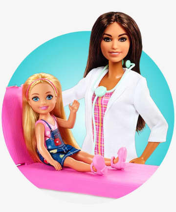
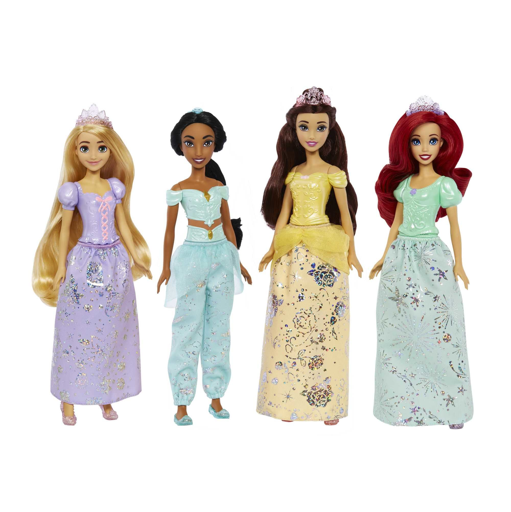
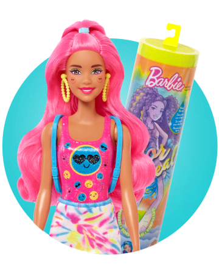
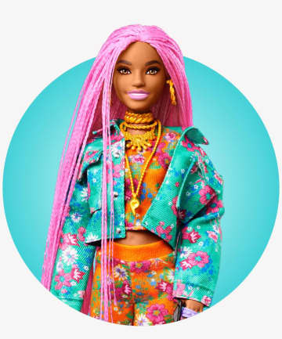

Contactános


Barbie es una muñeca que ha sido un ícono de la moda y la cultura popular durante más de 60 años. Creada por Ruth Handler en 1959, Barbie ha evolucionado desde su primer lanzamiento hasta convertirse en la muñeca más popular del mundo. La historia de Barbie comienza en 1956, cuando Ruth Handler, cofundadora de la empresa de juguetes Mattel, viajó a Europa con su familia. Allí, vio a su hija Barbara jugando con una muñeca llamada Lili, que era una figura adulta con cuerpo de caucho y ropa removible. Handler se inspiró en esta muñeca y decidió crear su propia versión para niñas estadounidenses. Así nació Barbie, que se presentó por primera vez en el Salón del Juguete de Nueva York en 1959. La muñeca tenía un cuerpo de plástico y ropa removible, y se vendía junto con una variedad de accesorios, como zapatos, sombreros y bolsos. Al principio, Barbie solo estaba disponible en tres colores de piel: blanca, negra y asiática. A pesar de que algunos críticos argumentaban que Barbie promovía un ideal de belleza irrealista para las niñas, la muñeca se convirtió rápidamente en un éxito comercial. En su primer año de producción, se vendieron más de 350,000 unidades. A medida que la popularidad de Barbie creció, Mattel comenzó a lanzar nuevas versiones de la muñeca, incluyendo modelos con diferentes profesiones y en diferentes décadas. En los años 60, Barbie se convirtió en un símbolo de la moda y la cultura popular. La muñeca se vendía con ropa inspirada en los últimos diseños de la alta costura, y se lanzaron versiones de Barbie que representaban a personajes famosos, como Marilyn Monroe y Jackie Kennedy. En la década de 1970, Barbie también se convirtió en un icono feminista, con la introducción de versiones de la muñeca que tenían profesiones tradicionalmente masculinas, como astronauta y médica. En los años 80 y 90, Barbie siguió evolucionando para reflejar los cambios en la cultura popular. Se lanzaron nuevas versiones de la muñeca inspiradas en películas y programas de televisión populares, como "Star Wars" y "Clueless". También se crearon versiones de Barbie con diferentes tipos de cuerpo y rasgos étnicos, para hacerla más inclusiva. En la actualidad, Barbie sigue siendo una de las muñecas más populares del mundo. A pesar de que ha en frentado críticas y controversias a lo largo de su historia, sigue siendo un símbolo de la moda y la cultura popular. En los últimos años, Mattel ha trabajado en hacer de Barbie más inclusiva y representativa de la diversidad de cuerpos y rasgos étnicos de las niñas que juegan con ella. En 2016, Mattel lanzó las "Barbie Fashionistas", una línea de muñecas con diferentes tipos de cuerpo, incluyendo curvas, tallas grandes y pequeñas. También se han lanzado versiones de Barbie con diferentes tonos de piel y rasgos étnicos, como cabello afro y ojos rasgados. Estas iniciativas han sido bien recibidas por parte de padres y educadores que buscan muñecas más representativas para las niñas. Además de su línea de muñecas, Barbie ha expandido su presencia en otros ámbitos de la cultura popular. Ha aparecido en películas, programas de televisión y videojuegos, y ha inspirado una amplia variedad de productos licenciados, como ropa, zapatos y accesorios. También ha sido objeto de exposiciones y museos dedicados a su historia y su impacto cultural. La historia de Barbie es un reflejo de cómo ha evolucionado la cultura popular y los ideales de belleza a lo largo de las últimas décadas. A pesar de las críticas y controversias, Barbie sigue siendo una de las muñecas más populares del mundo y un ícono de la moda y la cultura popular.
Inspira a la próxima generación con sus Barbie con Profesiones favoritas de shop.mattel.com. ¡Conoce hoy a Barbie Presidenta, Doctora, Gimnasta y más!
 ComprarCon su estilo elegante y su encanto, podrás recrear escenas mágicas y crear tus propias historias de princesas. ¡Deja volar tu imaginación!
 ComprarVive la magia de Barbie con nuestra gama de muñecas Barbie Reveal. Sorpresas emocionantes y diseños únicos en cada muñeca. ¡Descúbrelas ya!
 ComprarCon la muñeca Barbie Fashionista, podrás explorar y experimentar con diferentes estilos y tendencias de moda.
 ComprarInspirate con estas grandiosas ideas para vestir a tu Barbie. Puedes dar click en "ver mas" para ver mas videos como éste. Ver más